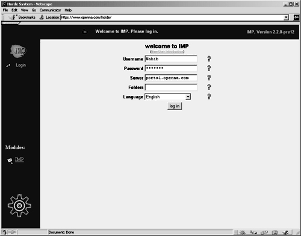

| Securing and Optimizing Linux: RedHat Edition -A Hands on Guide | ||
|---|---|---|
| Prev | Chapter 30. Optional component to install with Apache | Next |
Several ways exist to configure Webmail IMP, and the one we've chosen is the new setup engine named setup.php3, which gives people the ability to configure IMP via a web browser.
For security reasons, it is disabled by default, but you can enable it with the following commands: To enable setup.php, use the following command:
[root@deep ] /# cd /home/httpd/horde/
[root@deep ] /horde# sh ./install.sh
|
Your blank configuration files have been created, please go to
the configuration utitlity at :
your install path url/setup.php3
|
Once the new setup engine of Webmail IMP has been enabled, point your browser to the following URL: http://my-web-server/horde/setup.php. At this point, you can walk through the graphical setup program and configure all aspects of IMP. my-web-server is the address where your Apache web server lives, and the /horde/ directory is where the setup.php file resides.
When you are done with the new setup engine of Webmail IMP, be sure to disable it again for security reasons. To disable setup.php, use the following command:
[root@deep ] /# cd /home/httpd/horde/
[root@deep ] /horde# sh ./secure.sh
|
I have made your configuration files, and libraries mode 0555
which is read / execute for everyone.
And the setup.php is mode 0000 which is no access period.
|
At this stage, we must verify that Webmail IMP is working on your system. To do this, point your web browser to the following address: http://my-web-server/horde/. my-web-server is the address where your Apache web server lives, and /horde is the directory that host Webmail IMP program.
